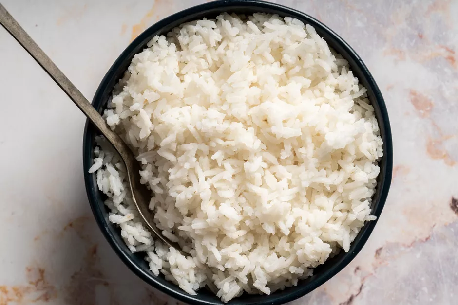

White Rice

Description
A fluffy white rice side dish that pairs well with a lot of mains
A staple in many cuisines that pairs well with many main dishes as a side dish
Ingredients
- White Rice 250g (Any variety will do)
- Salt
- Water
Method
- Pour out 250g of the rice into a bowl
- Rinse the rice in lukewarm water 4 times
- Drain the rice
- Place the rice into rice-cooker bowl
- Cover rice in water until it covers the rice by about 1.5cm
- Turn the rice cooker on
- Wait until its done. Viola, perfectly cooked fluffy rice
- Use a fork to fluff up the rice